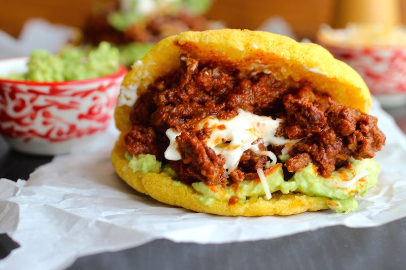

Chili Con Carne
Back to main
The most delicious soup in the world next to cream of mushroom.
This goes great with any carbs. Arepa, chips, rice, wrap, bread, crackers, whatever you got.
Ingredients
- Red kidney beans
- Fresh red tomatoes
- Salt, black and white pepper, cumin, paprika
- Oregano
- Garlic
- Onions
- Bell pepper
- Cilantro
- Meat of your choice.
- Brown sugar... or PEPSI. (Yeah you read that right...)
Steps
- Make sure to leave the beans soaked in water with a dash of salt overnight.
- In a pot, throw in the beans with a little more salt and oil and let them boil for a WHILE. Until they're soft.
- Chop the tomatoes, onions, bell peppers, garlics and toss them in a pan with oil.
- Add salt, peppers, cumin and paprika.
- Add the meat of your choice and cook it nicely.
- LET IT SIZZZZZZLEEEEEE!
- Once the beans are done, add them into the pot.
- Once everything cooks nicely together, add some brown sugar... or Pepsi.
- Once the smell becomes irresistible, serve.
You already know how to make arepas so why not fill them up with chili?
Spice it!
